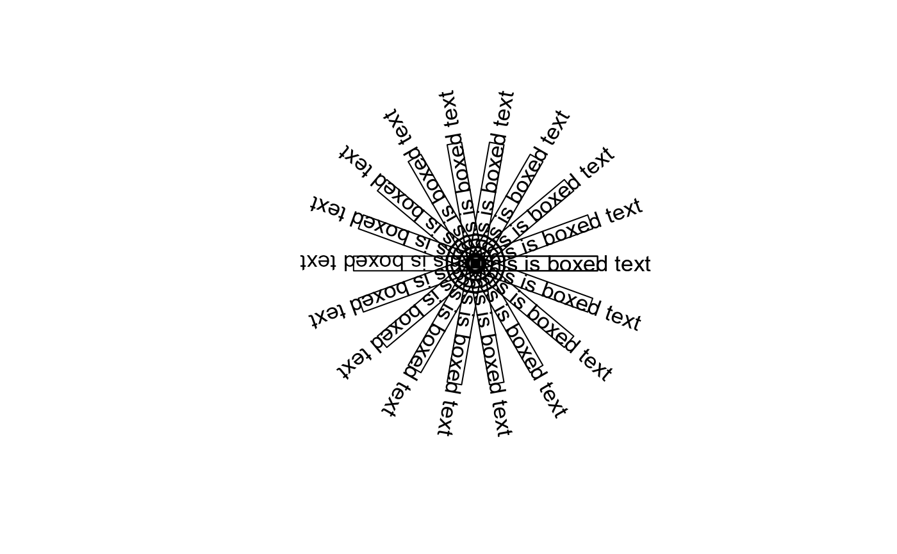
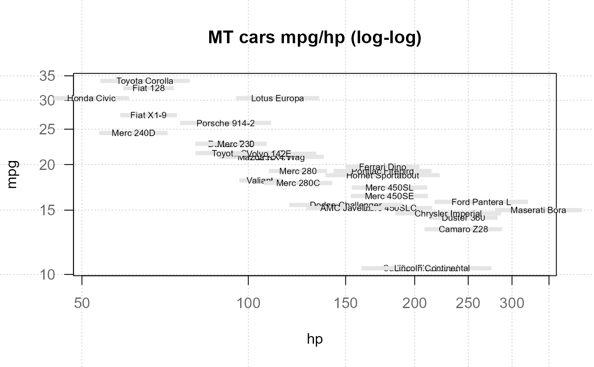

boxedText draws the strings given in the vector labels at the coordinates given by x and y, surrounded by a rectangle.
Usage
boxedText(x, ...)
# Default S3 method
boxedText(
x,
y = NULL,
labels = NULL,
adj = NULL,
pos = NULL,
offset = 0.5,
vfont = NULL,
cex = 1,
col = NULL,
font = NULL,
srt = 0,
xpad = 0.2,
ypad = 0.2,
density = NULL,
angle = 45,
bg = NA,
border = par("fg"),
lty = par("lty"),
lwd = par("lwd"),
...
)
# S3 method for class 'formula'
boxedText(formula, data = parent.frame(), ..., subset)Arguments
- x, y
numeric vectors of coordinates where the text labels should be written. If the length of x and y differs, the shorter one is recycled.
- ...
additional arguments are passed to the text function.
- labels
a character vector or expression specifying the text to be written. An attempt is made to coerce other language objects (names and calls) to expressions, and vectors and other classed objects to character vectors by as.character. If labels is longer than x and y, the coordinates are recycled to the length of labels.
- adj
the value of adj determines the way in which text strings are justified. A value of 0 produces left-justified text, 0.5 (the default) centered text and 1 right-justified text. (Any value in
[0, 1]is allowed, and on most devices values outside that interval will also work.) Note that the adj argument of text also allows adj = c(x, y) for different adjustment in x- and y- directions.- pos
a position specifier for the text. If specified this overrides any adj value given. Values of 1, 2, 3 and 4, respectively indicate positions below, to the left of, above and to the right of the specified coordinates.
- offset
when pos is specified, this value gives the offset of the label from the specified coordinate in fractions of a character width.
- vfont
NULLfor the current font family, or a character vector of length 2 for Hershey vector fonts. The first element of the vector selects a typeface and the second element selects a style. Ignored if labels is an expression.- cex
numeric character expansion factor; multiplied by
par("cex")yields the final character size.NULLandNAare equivalent to 1.0.- col, font
the color and (if vfont = NULL) font to be used, possibly vectors. These default to the values of the global graphical parameters in
par().- srt
the string rotation in degrees.
- xpad, ypad
the proportion of the rectangles to the extent of the text within.
- density
the density of shading lines, in lines per inch. The default value of
NULLmeans that no shading lines are drawn. A zero value of density means no shading lines whereas negative values (and NA) suppress shading (and so allow color filling).- angle
angle (in degrees) of the shading lines.
- bg
color(s) to fill or shade the rectangle(s) with. The default
NA(or also NULL) means do not fill, i.e., draw transparent rectangles, unless density is specified.- border
color for rectangle border(s). The default is
par("fg"). Useborder = NAto omit borders (this is the default). If there are shading lines,border = TRUEmeans use the same colour for the border as for the shading lines.- lty
line type for borders and shading; defaults to
"solid".- lwd
line width for borders and shading. Note that the use of
lwd = 0(as in the examples) is device-dependent.- formula
A formula of the form
lhs ~ rhs, wherelhsgives the response values andrhsthe corresponding groups or explanatory variables.- data
an optional matrix or data frame (or similar; see
model.frame) containing the variables in the formula. By default the variables are taken fromenvironment(formula).- subset
an optional vector specifying a subset of observations to be used in the analysis.
See also
similar function in package plotrix plotrix::boxed.labels (lacking rotation option)
Other graphics.annotation:
barText(),
colLegend(),
errBars(),
stamp(),
textLegend(),
titleRect()
Examples
canvas(xpd=TRUE)
boxedText(0, 0, adj=0, label="This is boxed text", srt=seq(0,360,20),
xpad=.3, ypad=.3)
points(0,0, pch=15)

plot(mpg ~ hp, data=mtcars, type="n", main="MT cars mpg/hp (log-log)",
panel.first=quote(grid()), las=1, log="xy")
boxedText(mpg ~ hp, data=mtcars,
labels=rownames(mtcars), cex=0.6, border=FALSE, bg="grey90")
